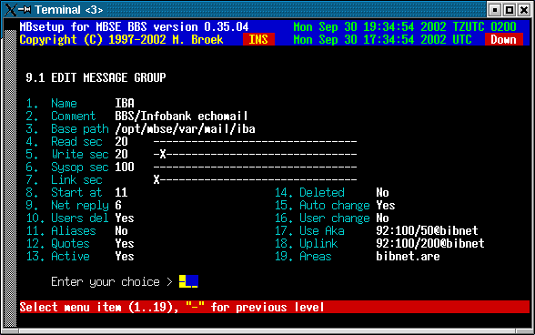

Last update 29-Jan-2001
MBSE BBS Setup - Mail Setup - Message Groups.
Introduction.
Message Groups are to logically divide your echomail areas in groups for different mail networks. It makes sense to select the groups by uplink, and areas file that is available for each network. By doing that downlinks can automatic connect areas that are not available at your bbs but are available from your uplink. NOTE: uplink requesting is not yet implemented!
Message Group Setup.
Name The name of the group. Comment The description of the group. Active If this group is active. Use Aka The Fidonet aka to use. Uplink The Fidonet aka of your uplink. Areas The name of the areas file (~/etc/file.ext). Deleted If this group must be deleted.
